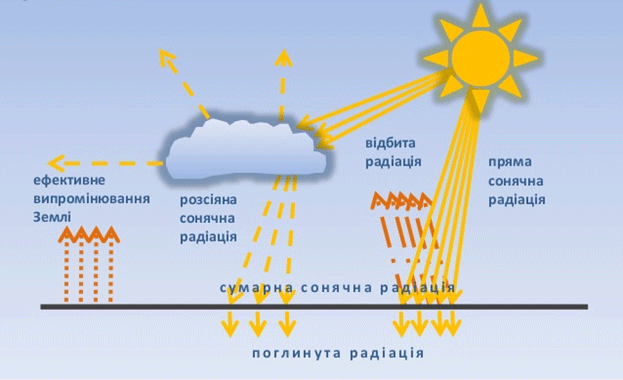

Географія (від грецького «гео» - земля, «графо» - пишу) – це наука про Землю. Вперше термін «географія» вжив грецький вчений Ератосфен (ІІІ ст. до н.е.) Основним її завданням спочатку був землеопис, а вже із XIX ст. – вивчення взаємозв’язків між природою, населенням та господарством всієї планети та її окремих частин. Географія у процесі розвитку перетворилась на складну науку, що складається із низки наук
Фізична географія вивчає природне середовище на території всієї земної поверхні та її окремих частин, економічна і соціальна географія дає відомості про населення і його господарську діяльність, картографія – про способи і методи відображення Землі на картографічних творах. Вивченням свого краю займається географічне краєзнавство, а окремих країн і регіонів світу – географічне країнознавство. Кожна з цих географічних наук внаслідок потреб суспільства диференціюється на окремі галузі знання. Так, фізична географія, наприклад, поділяється на геоморфологію (наука про рельєф), ґрунтознавство (наука про ґрунти), метеорологію та кліматологію (науки про атмосферні явища), гідрологію (наука про водні об’єкти), біогеографію (наука про поширення живих організмів), ландшафтознавство (наука про природні й антропогенні комплекси). На стику географії з іншими науками виникли медична географія, політична географія та ін. Джерелам географічних знань є: польові географічні дослідження, які проводяться в експедиціях, у стаціонарних науково-дослідних установах, під час екскурсій; довідники, географічні енциклопедії, словники, наукові збірники, журнали та ін; музеї з різноманітними експозиціями, матеріали засобів масової інформації, Інтернет; картографічні матеріали: карти, плани, глобуси, атласи. Широко використовуються геоінформаційні системи (ГІС). Методи географічних досліджень – це прийоми і способи пізнання об’єктів і явищ. Серед них головними є: описовий, порівняльний, історико-географічний, експедиційний, літературний, картографічний, статистичний та ін. Історія географічних досліджень. Пізнання природи Землі розпочалося із появою людини, але перші уявлення про її кулясту форму виникли у Стародавній Греції у VI-IVст. до н.е. (Аристотель, Піфагор та ін.). Ці знання були тимчасово забуті, вони відродилися у XV ст.. Однак давнім єгиптянам були відомі узбережжя Євразії та Африки, а європейцям з Х ст. – береги Америки і Гренландії, купець Марко Поло (ХIII ст. – відкрив шлях до Індії і Китаю), Васко да Гама (1497-1498 рр.), обігнувши Африку, Х.Колумб (1492 р.), відкривши Америку, Ф.Магеллан, здійснивши першу навколосвітню подорож (1519-121 рр.). Уже в XVI ст. стало відомо, що існує єдиний Світовий океан, що водна поверхня займає більшу площу, ніж суходіл. У процесі вивчення Землі мандрівники складали географічні карти. Перші карти світу створили Ератосфен (III ст. до н.е.) і Птолемей (II ст. н.е.), на них відображено частина Євразії і Пн. Африка, які були в цей час відомі європейцям. На основі карти Птолемея німецький вчений М. Бехайм створив перший глобус Землі (1492 р.). Перший атлас України склав у 1650 р. французький мандрівник і картограф Г. Боплан, «Атлас України і сумежних земель» за ред. В. Кубійовича вийшов у 1937 р., а найновіший «Національний атлас України» - у 2008 році.
Тема 2. Способи зображення ЗемліЗображення земної поверхні може бути у вигляді глобуса, плану, карти, рисунка, фотографії, аерофотознімка. Усі види зображень виконуються у певному масштабі. Масштаб – це відношення, що показує ступінь зменшення довжини ліній на карті, плані чи глобусі порівняно з їх дійсною відстанню на місцевості. Масштаби бувають числові (наприклад: 1:100 000), іменовані (в 1см 1 км) та лінійні (графік внизу карти у вигляді лінії, поділеної на сантиметри, на якому відзначено іменований масштаб). Земля, відомо, має кулясту форму, тому її об’ємною моделлю є глобус. Він відтворює Землю у зменшеному вигляді без спотворень, на ньому всі об’єкти (материки, океани та ін.) показані у повній відповідності з їх положенням на земній кулі. Масштаб шкільного глобуса – 1:50 000 000 ( в 1 см 500 км). Основними картографічними творами є план і карта. Це – зменшене, узагальнене зображення земної поверхні на площині у певному масштабі за допомогою умовних знаків.
Тема 3. Географічні наслідки параметрів і рухів Землі як планетиПоказники руху Землі навколо своєї осі Період повного обертання Землі навколо своєї осі дорівнює 23 год 56 хв 04 с. Цей період часу заокруглили до 24 год і назвали добою. Осьовий рух нашої планети спрямований проти руху годинникової стрілки. Обертання Землі навколо осі має ряд географічних наслідків. Зокрема, воно вплинуло на формування сплющеної з полюсів форми Землі, спричиняє добові ритми в географічній оболонці, є причиною існування сили Коріоліса.

Одним з наслідків осьового обертання Землі є її куляста форма. Вимірювання її розмірів засвідчили, що через осьове обертання Земля на 21 км сплюснута біля полюсів, тобто її форма близька до еліпсоїда обертання. Середній діаметр Землі становить 12 750 км, а довжина її екватора дорівнює приблизно 40 000 км. Поверхня Землі не ідеально рівна, на ній є гори, рівнини, западини, і тому форму Землі не можна виразити у вигляді геометричної фігури. Форму нашої планети вчені назвали геоїдом, що в перекладі з грецької означає «землеподібна». Цей термін було запропоновано в 1873 р. німецьким фізиком Йоганном Лістінгом.
Тема 4. Літосфера та рельєфБудова Землі. Історія Землі нараховує майже 5 млрд. років. Про це вчені довідались із позаземних джерел, таких як метеорити та інші тіла Сонячної системи, а також із дослідження гірських порід і скам'янілостей земної кори. Щоб уявити собі безкінечно довгу історію Землі, геологи подали її у вигляді геохронологічної таблиці, у якій геологічний час поділяють на ери, та на періоди, а ті - на епохи. Ери змінювались від найдавнішої у такому порядку - архейська, протерозойська, палеозойська, мезозойська, кайнозойська.
У архейській і протерозойській ерах (докембрій), що були понад 4 млрд. років тому, відбулося первісне нарощування суходолу і відбулося відокремлення мантії від ядра, сформувалась первинна атмосфера і, ймовірно, виникло життя. На протерозой припадає головна фаза байкальської складчастості, внаслідок якої утворилися найдавніші гори (Прибайкалля і Забайкалля). У палеозої окремі ділянки суші з'єдналися, утворивши суперконтинент Пангею, що простягався від полюса до полюса. Почали розвиватися наземні рослини і панцирні тварини. Наприкінці цього періоду майже 90 % живих організмів вимерло внаслідок зміни клімату. У палеозої відбувалася почергова активізація тектонічних рухів - так звані тектонічні епохи, або складчастості - каледонська (девонський період), герцинська (кам'яновугільний і пермський). У каледонську тектонічну епоху утворились гори Скандинавські, а у герцинську - Уральські, Шварцвальд, Аппалачі.
Тема 5. Атмосфера та кліматАтмосфера - повітряна оболонка Землі. Атмосфера захищає нашу планету від астероїдів та метеоритів, ультрафіолетового випромінювання. Завдяки її складу існує життя на Землі. Склад і будова. Атмосфера Землі складається з суміші газів (повітря), водяної пари і домішок (аерозолів). Повітря біля підстилаючої поверхні містить (за об'ємом) понад 78 % азоту, близько 21 % кисню і менше 1 % інших газів. Склад його майже скрізь однаковий і унаслідок перемішування зберігається до висоти 90-100 км. Вище переважають легші гази. Вміст вуглекислого газу на різних висотах неоднаковий. Він збільшується у зв'язку із спалюванням все більшої кількості вугілля, нафти, природного газу. Озону в атмосфері дуже мало, але внаслідок фотохімічних реакцій він утворює на висоті 20-30 км шар в стратосфері озоновий екран. Цей шар затримує згубну для живих організмів ультрафіолетову радіацію. Тому вище від цього шару температура в атмосфері підвищується. Кількість водяної пари в приземному шарі сильно змінюється, а з віддаленням від поверхні швидко знижується. На висоті 2 км її вже в два рази менше, ніж біля поверхні, а вище 70-80 км вона відсутня взагалі. Тверді і рідкі домішки в атмосфері (аерозолі) - це пил (у тому числі і космічний), сажа, попіл, кристали льоду і морської солі, краплинки води, мікроорганізми, пилок рослин і ін. Вміст їх сильно змінюється залежно від умов. Атмосфера має шарувату будову . Відповідно до змін температури з висотою виділяють такі шари: тропосферу (до 16 км), стратосферу (до 50 км), мезосферу (до 80 км), термосферу, що поступово переходять у міжпланетний простір приблизно на висоті 3000 км. У тропосфері і мезосфері температура з висотою знижується, а в стратосфері і термосфері, навпаки, підвищується. Нижній шар атмосфери — тропосфера - містить понад 90 % всієї маси атмосфери. Висота тропосфери: до 18 км - над екватором і 8-10 км - в полярних областях. Температура з підняттям вгору у тропосфері знижується в середньому на 6°С на 1 км, а тиск – на 11 мм рт. ст. на кожні 100 м. У ній зосереджена майже вся водяна пара, утворюються хмари і випадають опади. Процеси, що відбуваються в тропосфері, безпосередньо впливають на підстилаючу поверхню, на життя і діяльність людей.
Сонячна радіація і температура повітря. Сонячна радіація - вся сукупність сонячного випромінювання. Потрапляючи в атмосферу, вона частково (близько 20%) нею поглинається і переходить в інші види енергії. Близько 30% радіації атмосфера розсіює у всі боки, у тому числі і до земної поверхні. Це - розсіяна радіація. Та радіація, яка доходить до поверхні, не розсіюючись і не поглинаючись в атмосфері, називається прямою радіацією. Пряма і розсіяна радіація, що надійшли до поверхні, складають сумарну радіацію.
 Тема 6. ГідросфераГідросфера - водна оболонка Землі. Вона включає всю хімічно не зв'язану воду, незалежно від її агрегатного стану. З 1,4 млрд. км3 загального об'єму вод гідросфери близько 96,5 % припадає на Світовий океан, 1,7% - на підземні води, приблизно стільки ж - 1,7% - на льодовики і постійні сніги (головним чином Арктики, Антарктиди і Гренландії), менш 0,01 % - на поверхневі води суші (річки, озера, болота). Таким чином на суші сконцентровано до 3,5 % вод. Незначна кількість води міститься в атмосфері і в живих організмах
Гідросфера єдина. Її єдність в спільності походження всіх природних вод з мантії Землі, в єдності їх розвитку, в просторовій безперервності, у взаємозв'язку всіх природних вод в системі Світового кругообігу води. Світовий кругообіг води - процес безперервного переміщення води під впливом сонячної енергії і сили тяжіння, що охоплює гідросферу, атмосферу, літосферу і живі організми. Кругообіг води складається з випаровування з поверхні океану, перенесення водяної пари повітряними потоками, його конденсації в атмосфері, випадання опадів, їх просочування і поверхневого та підземного стоку з суші в океан. Це відповідає великому кругообігу води (рис. 2). У процесі Світового кругообігу води відбувається поступове її оновлення у всіх частинах гідросфери. Цей процес вимагає різних проміжків часу: підземні води оновлюються за сотні, тисячі і мільйони років; полярні льодовики - за 8-15 тис. років; води Світового океану - за 2,5-3 тис. років; замкнуті, безстічні озера - за 200-300 років; протічні - за декілька років; річки - за 12-14 діб; водяна пара атмосфери - за 8 діб; вода в організмах - за декілька годин. Світовий кругообіг води зв'язує всі зовнішні оболонки Землі і організми. Мале коло кругообігу води в природі складається з випаровування, перенесення водяної пари і випадання опадів
Тема 7. БіосфераБіосфера – це «жива» оболонка Землі. Вона охоплює верхні шари літосфери (до 5 км), всю гідросферу та нижні шари атмосфери (20-25 км), тобто середовище проживання живих організмів. Основними складовими біосфери є:
На сьогоднішній день біосфера налічує близько 3 млн. видів організмів. Всі живі організми у процесі своєї життєдіяльності взаємодіють між собою. Так, рослини, вбираючи з повітря вуглекислий газ, натомість виділяють в атмосферу необхідний усьому живому кисень. Тварини вдихають кисень, а видихають вуглекислий газ, без якого неможливим би був процес фотосинтезу і, як наслідок, утворення кисню. Для живлення рослинам і тваринам потрібні поживні речовини. Але тварини не здатні їх утворювати, тому джерелом живлення для них виступають рослини (травоїдні) або інші тварини (хижаки). За розкладання решток відмерлих рослин і тварин відповідають гриби і бактерії. Вони розщеплюють органічні речовини на неорганічні, які є джерелом живлення для рослин. Так відбувається процес біологічного кругообігу

Всі живі організми поширюються на земній кулі нерівномірно. Їхнє поширення залежить від кліматичних умов, що змінюються від екватора до полюсів. Кожна рослина та тварина пристосована до тих умов середовища, в якому вона перебуває.
Тема 8. Природні комплексиГеографічне положення. Дві лісові зони – мішаних (хвойно-широколистих) і широколистих лісів – лежать у північній і західній частині України. Вони займають 28 % території країни.. Мішані ліси, які називають Поліссям, тягнуться із заходу на схід широкою смугою між північним кордоном України і умовною лінією, що проходить містами Володимир-Волинський – Луцьк – Рівне – Житомир – Київ – Ніжин – Глухів. Полісся – це дивовижний край лісів і річок, де не буває нищівних засух, де в багатьох селах весною їздять вулицями на човнах, де повітря пахне сосною і хмелем, і здається, що його можна пити як березовий сік. Так поетично описують свій край поліщуки. На заході України мішані ліси змінюються у південному напрямку широколистими, які поширюються до Передкарпатської височини і кордону з Молдовою. Рельєф і корисні копалини. Зона мішаних лісів займає здебільшого Поліську низовину. Її поверхня майже плоска, з невеликим похилом до Дніпра і Прип’яті. Її абсолютні висоти рідко перевищують 200 м, найвищою ділянкою є Словечансько-Овруцький кряж (понад 300 м). На рельєфі позначився вплив льодовика: він приніс з півночі відшліфовані камені-валуни, залишив відклади у вигляді піщаних полів, моренних горбів та валів (Волинське пасмо). Перевіяні вітром піски утворюють дюни завдовжки до 5 км і заввишки до 18 м. Широколисті ліси вкривають височини – Волинську, Розточчя, Гологоро-Кременецький кряж, Подільську, Хотинську. Височини зазнали тектонічного підняття наприкінці кайнозойської ери, що спричинило врізання річкових долин, поширення водно-ерозійних форм поверхні. Внаслідок цього рельєф у багатьох місцях є горбогірним, висоти нерідко перевищують 400 м над рівнем моря. Водночас на вододільних ділянках Подільської височини трапляються плоскі височини – плато. Подільська височина і Прут-Дністровське межиріччя – найбільше в Україні скупчення карстових форм рельєфу. Там зосереджено понад 100 печер у гіпсових відкладах. Серед них і найдовші в світі – Оптимістична (понад 200 км), Попелюшка (80 км), а також Озерна, Кришталева, Млинки та інші). У місцях неглибокого залягання кристалічних порід знайдено поклади міді (Волинська область), каолінів, гранітів, базальтів, лабрадоритів, габро і коштовного каміння – топазів, яшми, бурштину (Рівненська, Житомирська області), фосфоритів (Сумська, Хмельницька області). Повсюдно на Поліссі є поклади торфу, а на Поділлі – вапняків. На кордоні з Польщею знаходиться Львівсько-Волинський кам’яновугільний басейн.
Тема 9. ОкеаниТихий океан. Площа океану - 178,7 млн. км2. Максимальна глибина – 11022 м (Маріанський жолоб). Кількість морів – 25. Найбільші моря – Філіппінське, Коралове, Тасманове, Південно-Китайське, Берингове. Найбільша затока – Аляска. Найбільші острови та групи островів – Зондські, Нова Гвінея, Нова Зеландія, Японські. Найпотужніші течії – Північна і Південна пасатні, Куросіо, Східно-Австралійська (теплі); Західних Вітрів, Перуанська, Каліфорнійська (холодні). Тихий океан займає 1/3 усієї земної поверхні і 1/2 площі Світового океану. Майже посередині його розділяє екватор, через його акваторію проходить 180 меридіан. Оксан омивас береги п'яти материків: Євразії на північному заході, Австралії на південному заході, Антарктиди на півдні, Південної та Північної Америки на сході. На півночі через Берингову протоку океан сполучається з Північним Льодовитим океаном. У південній частині умовні межі між трьома океанами – Тихим та Індійським, Тихим та Атлантичним – проводяться по меридіанах від крайньої південної материкової або острівної точки до антарктичних берегів. Найбільше островів різних за своїм походженням зосереджено у західній частині океану. Початок освоєння європейцями Тихого океану поклав Ф. Магеллан, експедиція якого здійснила в 1519-1521 рр. навколосвітню подорож. Багато відомостей про природу океану було зібрано під час плавань А. Тасмана, В. Беринга та Дж. Кука. З початку XVIII ст. до кінця XIX ст. вивчалися фізичні властивості океанічних вод та проводились глибоководні дослідження океану. Особливо важливі результати мали експедиції англійського судна "Челленджер". Провів значні дослідження в Тихому океані адмірал Степан Макаров, що був членом експедиції на кораблі "Витязь". Період з кінця XIX ст. характеризується комплексними дослідженнями океану, що проводяться з морських суден та берегових станцій. У другій половині XX ст. цікаві і різнобічні дослідження в межах Тихого океану проводили норвежець Тур Хейєрдал та француз Жак-Ів Кусто На сучасному етапі вивченням природи Тихого океану займаються спеціально створені міжнародні організації.
Тема 10. ЄвразіяПлоща суходолу - 54млн. км3. Населення - 4,7 % млрд. осіб (2012). Найвища точка над рівнем моря — г. Джомолунгма (Еверест), 8848 м. Найнижча точка від рівня моря — поверхня Мертвого моря — 400 м. Найдовша річка - Янцзи, 6300 км. Найбільше озеро - Каспійське. Найбільший острів - Калімантан. Євразія складається з двох частин світу - Азії (площа - 43,4 млн. км2 та Європи (близько 10,0 млн. км2). Межа між ними проходить по східному підніжжю Уральських гір. Євразія є найбільшим материком в світі та займає третину суходолу всієї планети. Вона розташована повністю у північній півкулі. Крайні західна і північно-східна частини заходять у західну півкулю. Значні території материка на півночі розташовані за полярним колом, а півострови і острови на півдні - за межами північного тропіка. Це впливає на різноманітність кліматичних умов, проте більша частина Євразії лежить в межах помірного природного поясу. Євразія - єдиний материк, що омивається всіма океанами: з заходу - водами Атлантичного океану, зі сходу - Тихого, з півночі - Північного Льодовитого, з півдня - Індійського. Істотний вплив на природу материка мають теплі і холодні морські течії, що протікають біля його берегів: Гольфстрім, Куросіо, Сомалійська, Мусонна. Середземним і Червоним морями Євразія відокремлена від Африки (на південному заході), а Беринговою протокою — від Північної Америки (на північному сході).